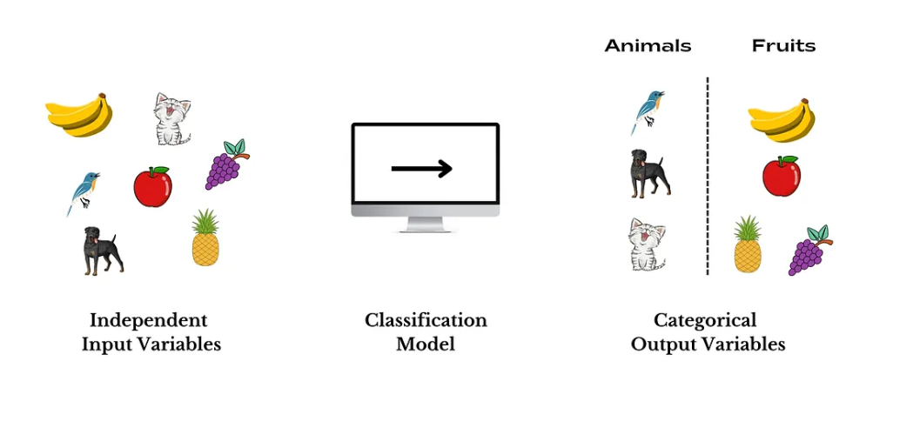
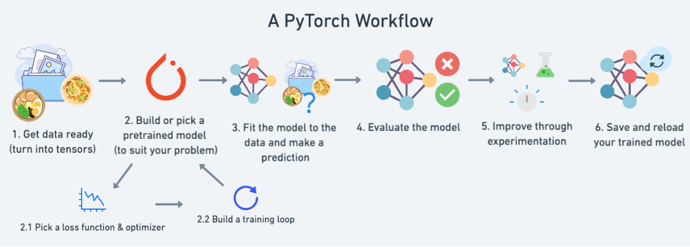
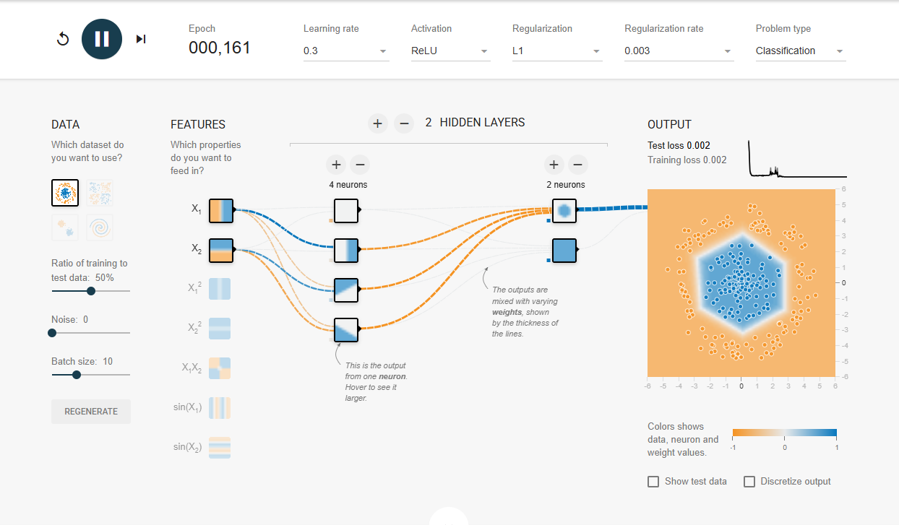

02. PyTorch Neural Network Classification
What is a Classification problem?
A classification problem involves predicting whether something is one
thing or another.
For example, you might want to:
| Problem Type | What Is It? | Example |
|---|---|---|
| Binary Classification | Target can be one of two options, e.g., yes or no. | Predict whether or not someone has heart disease based on their health parameters. |
| Multi-Class Classification | Target can be one of more than two options. | Decide whether a photo is of food, a person, or a dog. |
| Multi-Label Classification | Target can be assigned more than one option. | Predict what categories should be assigned to a Wikipedia article (e.g., mathematics, science, & philosophy). |

Classification, along with regression (predicting a number, as covered
in Notebook 01), is one of the most common types of machine learning
problems.
In this notebook, we’ll explore different classification problems using
PyTorch.
Specifically, we’ll focus on taking a set of inputs and predicting the
class they belong to.
What we are going to cover
In this notebook, we’ll revisit the PyTorch workflow introduced in Notebook 01, reinforcing the key steps and concepts
However, instead of predicting a straight line (a regression problem), we’ll focus on a classification problem.
| Topic | Contents |
|---|---|
| 0. Architecture of a classification neural network | Neural networks can come in almost any shape or size, but they typically follow a similar floor plan. |
| 1. Getting binary classification data ready | Data can be almost anything but to get started we're going to create a simple binary classification dataset. |
| 2. Building a PyTorch classification model | Here we'll create a model to learn patterns in the data, we'll also choose a loss function, optimizer and build a training loop specific to classification. |
| 3. Fitting the model to data (training) | We've got data and a model, now let's let the model (try to) find patterns in the (training) data. |
| 4. Making predictions and evaluating a model (inference) | Our model's found patterns in the data, let's compare its findings to the actual (testing) data. |
| 5. Improving a model (from a model perspective) | We've trained and evaluated a model but it's not working, let's try a few things to improve it. |
| 6. Non-linearity | So far our model has only had the ability to model straight lines, what about non-linear (non-straight) lines? |
| 7. Replicating non-linear functions | We used non-linear functions to help model non-linear data, but what do these look like? |
| 8. Putting it all together with multi-class classification | Let's put everything we've done so far for binary classification together with a multi-class classification problem. |
0. Architecture of a classification neural network
| Hyperparameter | Binary Classification | Multiclass Classification |
|---|---|---|
Input Layer Shape (in_features) |
Same as number of features (e.g., 5 for age, sex, height, weight, smoking status in heart disease prediction) | Same as binary classification |
| Hidden Layer(s) | Problem specific, minimum = 1, maximum = unlimited | Same as binary classification |
| Neurons Per Hidden Layer | Problem specific, generally 10 to 512 | Same as binary classification |
Output Layer Shape (out_featues) |
1 (one class or the other) | 1 per class (e.g., 3 for food, person, or dog photo) |
| Hidden Layer Activation | Usually ReLU (rectified linear unit) but can be many others | Same as binary classification |
| Output Activation | Sigmoid (torch.sigmoid in PyTorch) |
Softmax (torch.softmax in PyTorch) |
| Loss Function | Binary crossentropy (torch.nn.BCELoss in PyTorch) |
Cross entropy (torch.nn.CrossEntropyLoss in PyTorch) |
| Optimizer | SGD (stochastic gradient descent), Adam (see torch.optim for more options) |
Same as binary classification |
Of course, this ingredient list of classification neural network components will vary depending on the problem you're working on.
But it's more than enough to get started.
We're going to get hands-on with this setup throughout this notebook.
1. Make classification data and get it ready
Let’s start by creating some data. We’ll use Scikit-Learn’s
make_circles()
method to generate two circles with differently colored dots.
from sklearn.datasets import make_circles
# Make 1000 samples
n_samples = 1000
# Create circles
X, y = make_circles(n_samples,
noise=0.03, # a little bit of noise to the dots
random_state=42) # keep random state so we get the same valuesAlright, now let's view the first 5 X and y values.
print(f"First 5 X features:\n{X[:5]}")
print(f"\nFirst 5 y labels:\n{y[:5]}")
First 5 X features:
[[ 0.75424625 0.23148074]
[-0.75615888 0.15325888]
[-0.81539193 0.17328203]
[-0.39373073 0.69288277]
[ 0.44220765 -0.89672343]]
First 5 y labels:
[1 1 1 1 0]
It seems there are two X values for every one y value. Following the data explorer’s motto—visualize, visualize, visualize—let’s load the data into a pandas DataFrame for better visualization.
# Make DataFrame of circle data
import pandas as pd
circles = pd.DataFrame({"X1": X[:, 0],
"X2": X[:, 1],
"label": y
})
circles.head(10)
X1 X2 label
0 0.754246 0.231481 1
1 -0.756159 0.153259 1
2 -0.815392 0.173282 1
3 -0.393731 0.692883 1
4 0.442208 -0.896723 0
5 -0.479646 0.676435 1
6 -0.013648 0.803349 1
7 0.771513 0.147760 1
8 -0.169322 -0.793456 1
9 -0.121486 1.021509 0
Each pair of X features (X1 and X2) has a corresponding label (y) of either 0 or 1. This indicates that our problem is a binary classification task, as there are only two possible classes. Now, let’s check how many values belong to each class.
# Check different labels
circles.label.value_counts()
label
1 500
0 500
Name: count, dtype: int64
500 each, nice and balanced. Let's plot them.
# Visualize with a plot
import matplotlib.pyplot as plt
plt.scatter(x=X[:, 0],
y=X[:, 1],
c=y,
cmap=plt.cm.RdYlBu);Alright, we’ve got a problem to solve! Let’s figure out how to build a PyTorch neural network to classify the dots into red (0) or blue (1).
1.1 Input and Output Shapes
One of the most common errors in deep learning is shape errors. Mismatched tensor shapes or operations will cause your model to fail. These errors are inevitable, but you can minimize them by consistently checking the shapes of your data.
A good practice is to focus on input and output shapes. Always ask:
- What shape are my inputs?
- What shape are my outputs?
Let’s explore this further.
# Check the shapes of our features and labels
X.shape, y.shape
((1000, 2), (1000,))
The first dimension of X and y matches—there are 1000 samples for each. But what about the second dimension of X?
To better understand the expected input and output shapes of your model, it’s helpful to examine the values and shapes of a single sample (both features and labels).
# View the first example of features and labels
X_sample = X[0]
y_sample = y[0]
print(f"Values for one sample of X: {X_sample} and the same for y: {y_sample}")
print(f"Shapes for one sample of X: {X_sample.shape} and the same for y: {y_sample.shape}")
Values for one sample of X: [0.75424625 0.23148074] and the same for y: 1
Shapes for one sample of X: (2,) and the same for y: ()
This tells us the second dimension for X means it has two features (vector) where as y has a single feature (scalar).
We have two inputs for one output.
1.2 Turn data into tensors and create train and test split
Now that we’ve explored the shapes of our data, let’s prepare it for use with PyTorch and modeling. Specifically, we’ll need to:
-
Convert Data to Tensors:
Currently, our data is in NumPy arrays. PyTorch prefers to work with PyTorch tensors, so we’ll convert our data accordingly.
-
Split Data into Training and Test Sets:
We’ll split our data into a training set (to train the model and learn patterns between
Xandy) and a test set (to evaluate the model’s performance on unseen data).
# Turn data into tensors
# Otherwise this causes issues with computations later on
import torch
X = torch.from_numpy(X).type(torch.float)
y = torch.from_numpy(y).type(torch.float)
# View the first five samples
X[:5], y[:5]
(tensor([[ 0.7542, 0.2315],
[-0.7562, 0.1533],
[-0.8154, 0.1733],
[-0.3937, 0.6929],
[ 0.4422, -0.8967]]),
tensor([1., 1., 1., 1., 0.]))
Now that our data is in tensor format, let’s split it into training and test sets.
To do so, we’ll use the helpful function train_test_split() from Scikit-Learn.
We’ll use test_size=0.2 (80% training, 20% testing). Since the split happens randomly across the data, we’ll set random_state=42 to ensure the split is reproducible.
# Split data into train and test sets
from sklearn.model_selection import train_test_split
X_train, X_test, y_train, y_test = train_test_split(X,
y,
test_size=0.2, # 20% test, 80% train
random_state=42) # make the random split reproducible
len(X_train), len(X_test), len(y_train), len(y_test)
(800, 200, 800, 200)
2. Building a model
We’ve got some data ready—now it’s time to build a model.
We’ll break it down into a few parts:
- Setting up device agnostic code (so our model can run on CPU or GPU if it’s available).
-
Constructing a model by subclassing
nn.Module. - Defining a loss function and optimizer.
- Creating a training loop (this’ll be in the next section).
The good news is we’ve been through all of the above steps before in notebook 01.
Except now we’ll be adjusting them so they work with a classification dataset.
Let’s start by importing PyTorch and torch.nn, as well as setting up device agnostic code.
# Standard PyTorch imports
import torch
from torch import nn
# Make device agnostic code
device = "cuda" if torch.cuda.is_available() else "cpu"
device
'cuda'
Excellent! Now that the device is set up, we can use it for any data or models we create. PyTorch will handle it on the CPU (default) or GPU if it’s available.
How about we create a model?
We’ll want a model capable of handling our X data as inputs and producing something in the shape of our y data as outputs.
In other words, given X (features), we want our model to predict y (label).
This setup, where you have features and labels, is referred to as supervised learning. This is because your data is telling your model what the outputs should be given a certain input.
To create such a model, it’ll need to handle the input and output shapes of X and y.
Remember how I said input and output shapes are important? Here we’ll see why.
Let’s create a model class that:
-
Subclasses
nn.Module(almost all PyTorch models are subclasses ofnn.Module). -
Creates 2
nn.Linearlayers in the constructor capable of handling the input and output shapes ofXandy. -
Defines a
forward()method containing the forward pass computation of the model. - Instantiates the model class and sends it to the target device.
# 1. Construct a model class that subclasses nn.Module
class CircleModelV0(nn.Module):
def __init__(self):
super().__init__()
# 2. Create 2 nn.Linear layers capable of handling X and y input and output shapes
self.layer_1 = nn.Linear(in_features=2, out_features=5) # takes in 2 features (X), produces 5 features
self.layer_2 = nn.Linear(in_features=5, out_features=1) # takes in 5 features, produces 1 feature (y)
# 3. Define a forward method containing the forward pass computation
def forward(self, x):
# Return the output of layer_2, a single feature, the same shape as y
return self.layer_2(self.layer_1(x)) # computation goes through layer_1 first then the output of layer_1 goes through layer_2
# 4. Create an instance of the model and send it to target device
model_0 = CircleModelV0().to(device)
model_0
CircleModelV0(
(layer_1): Linear(in_features=2, out_features=5, bias=True)
(layer_2): Linear(in_features=5, out_features=1, bias=True)
)
What’s going on here?
We’ve seen a few of these steps before. The only major change is what’s happening between self.layer_1 and self.layer_2.
self.layer_1 takes 2 input features (in_features=2) and produces 5 output features (out_features=5).
This is known as having 5 hidden units or neurons.
This layer turns the input data from having 2 features to 5 features.
Why do this?
This allows the model to learn patterns from 5 numbers rather than just 2 numbers, potentially leading to better outputs.
I say potentially because sometimes it doesn’t work.
The number of hidden units you can use in neural network layers is a hyperparameter (a value you can set yourself), and there’s no set-in-stone value you have to use.
Generally, more is better, but there’s also such a thing as too much. The amount you choose will depend on your model type and the dataset you’re working with.
Since our dataset is small and simple, we’ll keep it small.
The only rule with hidden units is that the next layer, in our case, self.layer_2, has to take the same in_features as the previous layer’s out_features.
That’s why self.layer_2 has in_features=5—it takes the out_features=5 from self.layer_1 and performs a linear computation on them, turning them into out_features=1 (the same shape as y).
A visual example of what a similar classification neural network to the one we’ve just built looks like. Try creating one of your own on the TensorFlow Playground website.
You can also do the same as above using nn.Sequential.
nn.Sequential performs a forward pass computation of the input data through the layers in the order they appear.
# Replicate CircleModelV0 with nn.Sequential
model_0 = nn.Sequential(
nn.Linear(in_features=2, out_features=5),
nn.Linear(in_features=5, out_features=1)
).to(device)
model_0
Sequential(
(0): Linear(in_features=2, out_features=5, bias=True)
(1): Linear(in_features=5, out_features=1, bias=True)
)
Woah, that looks much simpler than subclassing nn.Module. Why not just always use nn.Sequential?
nn.Sequential is fantastic for straightforward computations. However, as the name suggests, it always runs in sequential order.
If you'd like something more complex to happen (rather than just straightforward sequential computation), you'll need to define your own custom nn.Module subclass.
Now that we've got a model, let's see what happens when we pass some data through it.
# Make predictions with the model
untrained_preds = model_0(X_test.to(device))
print(f"Length of predictions: {len(untrained_preds)}, Shape: {untrained_preds.shape}")
print(f"Length of test samples: {len(y_test)}, Shape: {y_test.shape}")
print(f"\nFirst 10 predictions:\n{untrained_preds[:10]}")
print(f"\nFirst 10 test labels:\n{y_test[:10]}")
Length of predictions: 200, Shape: torch.Size([200, 1])
Length of test samples: 200, Shape: torch.Size([200])
First 10 predictions:
tensor([[0.0555],
[0.0169],
[0.2254],
[0.0071],
[0.3345],
[0.3101],
[0.1151],
[0.1840],
[0.2205],
[0.0156]], device='cuda:0', grad_fn=)
First 10 test labels:
tensor([1., 0., 1., 0., 1., 1., 0., 0., 1., 0.])
Hmm, it seems there are the same number of predictions as there are test labels, but the predictions don’t look like they’re in the same form or shape as the test labels.
We’ve got a couple of steps we can take to fix this. We’ll explore these later on.
2.1 Setup loss function and optimizer
In notebook 01, we set up a loss (criterion or cost function) and optimizer. Different problem types require different loss functions.
For regression (predicting a number), use mean absolute error (MAE) loss. For binary classification (like ours), binary cross-entropy is common.
The same optimizer, such as SGD or Adam, can often be used across various problem types.
| Loss function/Optimizer | Problem type | PyTorch Code |
|---|---|---|
| Stochastic Gradient Descent (SGD) optimizer | Classification, regression, many others. | torch.optim.SGD() |
| Adam Optimizer | Classification, regression, many others. | torch.optim.Adam() |
| Binary cross entropy loss | Binary classification | torch.nn.BCELossWithLogits or torch.nn.BCELoss |
| Cross entropy loss | Multi-class classification | torch.nn.CrossEntropyLoss |
| Mean absolute error (MAE) or L1 Loss | Regression | torch.nn.L1Loss |
| Mean squared error (MSE) or L2 Loss | Regression | torch.nn.MSELoss |
Common Loss Functions and Optimizers:
There are many loss functions and optimizers, but these are some of the most common you'll encounter.
Binary Cross Entropy Loss is used for binary classification problems.
Loss Functions: A loss function (or "criterion") measures how wrong your model's predictions are. The higher the loss, the worse your model.
PyTorch has two Binary Cross Entropy implementations:
- torch.nn.BCELoss() - Measures the binary cross entropy between target (label) and input (features).
- torch.nn.BCEWithLogitsLoss() - Includes a built-in sigmoid layer (nn.Sigmoid), making it more numerically stable.
Which one to use?
Generally, torch.nn.BCEWithLogitsLoss() is a better option due to its numerical stability.
For the optimizer: We'll use torch.optim.SGD() with a learning rate of 0.1 to optimize the model parameters.
# Create a loss function
# loss_fn = nn.BCELoss() # BCELoss = no sigmoid built-in
loss_fn = nn.BCEWithLogitsLoss() # BCEWithLogitsLoss = sigmoid built-in
# Create an optimizer
optimizer = torch.optim.SGD(params=model_0.parameters(),
lr=0.1)
Creating an Evaluation Metric
While a loss function measures how wrong a model is, an evaluation metric shows how right it is. Both offer different perspectives, helping to assess performance more effectively.
Accuracy is a common metric for classification problems. It is calculated as:
Accuracy = (Correct Predictions / Total Predictions) × 100%
For example, if a model correctly predicts 99 out of 100 samples, its accuracy is 99%.
Now, let's write a function to calculate accuracy.
# Create a loss function
# loss_fn = nn.BCELoss() # BCELoss = no sigmoid built-in
loss_fn = nn.BCEWithLogitsLoss() # BCEWithLogitsLoss = sigmoid built-in
# Create an optimizer
optimizer = torch.optim.SGD(params=model_0.parameters(),
lr=0.1)
Evaluation Metric
An evaluation metric provides another perspective on model performance.
Loss function measures how wrong a model is, while an evaluation metric shows how right it is. Both offer valuable insights.
Accuracy
Accuracy is a common metric for classification, calculated as:
Accuracy = (Correct Predictions / Total Predictions) × 100%
For example, a model with 99 correct predictions out of 100 has an accuracy of 99%.
Now, let's implement an accuracy function.
# Calculate accuracy (a classification metric)
def accuracy_fn(y_true, y_pred):
correct = torch.eq(y_true, y_pred).sum().item() # torch.eq() calculates where two tensors are equal
acc = (correct / len(y_pred)) * 100
return acc
Excellent! We can now use this function whilst training our model to measure it's performance alongside the loss.
3. Train model
3.1 Going from raw model outputs to predicted labels (logits -> prediction probabilities -> prediction labels)
Before starting the training loop, let's check what the model outputs during the forward pass.
The forward() method defines the forward pass, where input data moves through the model to generate predictions.
Let's pass some data into the model to see the results.
# View the frist 5 outputs of the forward pass on the test data
y_logits = model_0(X_test.to(device))[:5]
y_logits
tensor([[0.0555],
[0.0169],
[0.2254],
[0.0071],
[0.3345]], device='cuda:0', grad_fn=)
Since our model hasn't been trained, its outputs are essentially random.
But what are these outputs?
They come from the forward() method, which applies two layers of nn.Linear(). Internally, this follows the equation:
$$ \mathbf{y} = x \cdot \mathbf{Weights}^T + \mathbf{bias} $$
The raw outputs of this equation (y), and thus the raw outputs of our model, are called logits.
These logits are what our model produces when it takes input data (x in the equation or X_test in the code).
However, logits are difficult to interpret. We need values comparable to our true labels.
To convert logits into a more useful form, we can apply the sigmoid activation function.
Let's try it out.
# Use sigmoid on model logits
y_pred_probs = torch.sigmoid(y_logits)
y_pred_probs
tensor([[0.5139],
[0.5042],
[0.5561],
[0.5018],
[0.5829]], device='cuda:0', grad_fn=)
Now, the outputs have some consistency, though they are still random.
They are now in the form of prediction probabilities (y_pred_probs), representing how much the model believes a data point belongs to one class or another.
Since we're working with binary classification, the ideal outputs are 0 or 1.
These values act as a decision boundary:
- The closer to 0, the more the model believes the sample belongs to class 0.
- The closer to 1, the more the model believes the sample belongs to class 1.
Specifically:
- If
y_pred_probs >= 0.5, theny = 1(class 1). - If
y_pred_probs < 0.5, theny = 0(class 0).
To convert prediction probabilities into class labels, we can round the outputs of the sigmoid activation function.
# Find the predicted labels (round the prediction probabilities)
y_preds = torch.round(y_pred_probs)
# In full
y_pred_labels = torch.round(torch.sigmoid(model_0(X_test.to(device))[:5]))
# Check for equality
print(torch.eq(y_preds.squeeze(), y_pred_labels.squeeze()))
# Get rid of extra dimension
y_preds.squeeze()
tensor([True, True, True, True, True], device='cuda:0')
tensor([1., 1., 1., 1., 1.], device='cuda:0', grad_fn=)
Excellent! Now it looks like our model's predictions are in the same form as our truth labels (y_test).
y_test[:5]
output: tensor([1., 0., 1., 0., 1.])
This allows us to compare our model's predictions with the test labels to evaluate its performance.
To summarize:
- We converted the model's raw outputs (logits) into prediction probabilities using a sigmoid activation function.
- We then transformed the prediction probabilities into class labels by rounding them.
And the use of the sigmoid activation function is not required when passing our model's raw outputs to the nn.BCEWithLogitsLoss (the "logits" in logits loss is because it works on the model's raw logits output), this is because it has a sigmoid function built-in.
3.2 Building a training and test loop
Now that we've covered how to convert raw model outputs into prediction labels, it's time to build a training loop.
We'll train for 100 epochs and display the model's progress every 10 epochs.
torch.manual_seed(42)
# Set the number of epochs
epochs = 100
# Put data to target device
X_train, y_train = X_train.to(device), y_train.to(device)
X_test, y_test = X_test.to(device), y_test.to(device)
# Build training and evaluation loop
for epoch in range(epochs):
### Training
model_0.train()
# 1. Forward pass (model outputs raw logits)
y_logits = model_0(X_train).squeeze() # squeeze to remove extra `1` dimensions, this won't work unless model and data are on same device
y_pred = torch.round(torch.sigmoid(y_logits)) # turn logits -> pred probs -> pred labls
# 2. Calculate loss/accuracy
# loss = loss_fn(torch.sigmoid(y_logits), # Using nn.BCELoss you need torch.sigmoid()
# y_train)
loss = loss_fn(y_logits, # Using nn.BCEWithLogitsLoss works with raw logits
y_train)
acc = accuracy_fn(y_true=y_train,
y_pred=y_pred)
# 3. Optimizer zero grad
optimizer.zero_grad()
# 4. Loss backwards
loss.backward()
# 5. Optimizer step
optimizer.step()
### Testing
model_0.eval()
with torch.inference_mode():
# 1. Forward pass
test_logits = model_0(X_test).squeeze()
test_pred = torch.round(torch.sigmoid(test_logits))
# 2. Caculate loss/accuracy
test_loss = loss_fn(test_logits,
y_test)
test_acc = accuracy_fn(y_true=y_test,
y_pred=test_pred)
# Print out what's happening every 10 epochs
if epoch % 10 == 0:
print(f"Epoch: {epoch} | Loss: {loss:.5f}, Accuracy: {acc:.2f}% | Test loss: {test_loss:.5f}, Test acc: {test_acc:.2f}%")
Epoch: 0 | Loss: 0.70034, Accuracy: 50.00% | Test loss: 0.69484, Test acc: 52.50%
Epoch: 10 | Loss: 0.69718, Accuracy: 53.75% | Test loss: 0.69242, Test acc: 54.50%
Epoch: 20 | Loss: 0.69590, Accuracy: 51.12% | Test loss: 0.69161, Test acc: 53.50%
Epoch: 30 | Loss: 0.69530, Accuracy: 50.62% | Test loss: 0.69136, Test acc: 53.00%
Epoch: 40 | Loss: 0.69497, Accuracy: 49.75% | Test loss: 0.69131, Test acc: 53.50%
Epoch: 50 | Loss: 0.69474, Accuracy: 50.12% | Test loss: 0.69134, Test acc: 53.50%
Epoch: 60 | Loss: 0.69457, Accuracy: 49.88% | Test loss: 0.69139, Test acc: 53.50%
Epoch: 70 | Loss: 0.69442, Accuracy: 49.62% | Test loss: 0.69146, Test acc: 54.00%
Epoch: 80 | Loss: 0.69430, Accuracy: 49.62% | Test loss: 0.69153, Test acc: 54.50%
Epoch: 90 | Loss: 0.69418, Accuracy: 49.62% | Test loss: 0.69161, Test acc: 54.50%
What do you notice about our model's performance?
It completed training and testing, but the results haven't improved significantly.
The accuracy remains around 50% for each data split.
Since this is a balanced binary classification problem, the model is performing no better than random guessing. With 500 samples per class, always predicting class 1 would still yield 50% accuracy.
4. Make predictions and evaluate the model
The metrics suggest our model is randomly guessing.
How can we investigate further?
Let's follow the data explorer's motto: "Visualize, visualize, visualize!"
We'll plot our model's predictions, the input data, and the decision boundary between class 0 and class 1.
To do this, we'll download and import the helper_functions.py script from the
Learn PyTorch for Deep Learning repo.
This script contains plot_decision_boundary(), a function that creates a NumPy meshgrid to visually show where our model predicts different classes.
We'll also use plot_predictions(), which we wrote in notebook 01.
import requests
from pathlib import Path
# Download helper functions from Learn PyTorch repo (if not already downloaded)
if Path("helper_functions.py").is_file():
print("helper_functions.py already exists, skipping download")
else:
print("Downloading helper_functions.py")
request = requests.get("https://raw.githubusercontent.com/mrdbourke/pytorch-deep-learning/main/helper_functions.py")
with open("helper_functions.py", "wb") as f:
f.write(request.content)
from helper_functions import plot_predictions, plot_decision_boundary
helper_functions.py already exists, skipping download
# Plot decision boundaries for training and test sets
plt.figure(figsize=(12, 6))
plt.subplot(1, 2, 1)
plt.title("Train")
plot_decision_boundary(model_0, X_train, y_train)
plt.subplot(1, 2, 2)
plt.title("Test")
plot_decision_boundary(model_0, X_test, y_test)
Oh wow, it seems we've found the cause of the model's performance issue.
It's trying to separate the red and blue dots using a straight line, which explains the 50% accuracy.
Since the data is circular, a straight line can only cut it down the middle at best.
In machine learning terms, this is underfitting. Our model isn't learning the predictive patterns from the data.
So, how can we improve this?
5. Improving a model (from a model perspective)
Let's try to fix our model's underfitting problem.
Focusing specifically on the model (not the data), there are a few ways we could do this.
| Model Improvement Technique* | What does it do? |
|---|---|
| Add more layers | Each layer potentially increases the learning capabilities of the model with each layer being able to learn some kind of new pattern in the data. More layers are often referred to as making your neural network deeper. |
| Add more hidden units | Similar to the above, more hidden units per layer means a potential increase in learning capabilities of the model. More hidden units are often referred to as making your neural network wider. |
| Fitting for longer (more epochs) | Your model might learn more if it had more opportunities to look at the data. |
| Changing the activation functions | Some data just can't be fit with only straight lines (like what we've seen), using non-linear activation functions can help with this (hint, hint). |
| Change the learning rate | Less model specific, but still related, the learning rate of the optimizer decides how much a model should change its parameters each step, too much and the model overcorrects, too little and it doesn't learn enough. |
| Change the loss function | Again, less model specific but still important, different problems require different loss functions. For example, a binary cross entropy loss function won't work with a multi-class classification problem. |
| Use transfer learning | Take a pretrained model from a problem domain similar to yours and adjust it to your own problem. We cover transfer learning in notebook 06. |
Let's see what happens if we add an extra layer to our model, fit for longer (epochs=1000 instead of epochs=100) and increase the number of hidden units from 5 to 10.
We'll follow the same steps we did above but with a few changed hyperparameters.
class CircleModelV1(nn.Module):
def __init__(self):
super().__init__()
self.layer_1 = nn.Linear(in_features=2, out_features=10)
self.layer_2 = nn.Linear(in_features=10, out_features=10) # extra layer
self.layer_3 = nn.Linear(in_features=10, out_features=1)
def forward(self, x): # note: always make sure forward is spelt correctly!
# Creating a model like this is the same as below, though below
# generally benefits from speedups where possible.
# z = self.layer_1(x)
# z = self.layer_2(z)
# z = self.layer_3(z)
# return z
return self.layer_3(self.layer_2(self.layer_1(x)))
model_1 = CircleModelV1().to(device)
model_1
CircleModelV1(
(layer_1): Linear(in_features=2, out_features=10, bias=True)
(layer_2): Linear(in_features=10, out_features=10, bias=True)
(layer_3): Linear(in_features=10, out_features=1, bias=True)
)
Now we've got a model, we'll recreate a loss function and optimizer instance, using the same settings as before.
# loss_fn = nn.BCELoss() # Requires sigmoid on input
loss_fn = nn.BCEWithLogitsLoss() # Does not require sigmoid on input
optimizer = torch.optim.SGD(model_1.parameters(), lr=0.1)
Beautiful, model, optimizer and loss function ready, let's make a training loop.
This time we'll train for longer (epochs=1000 vs epochs=100) and see if it improves our model.
torch.manual_seed(42)
epochs = 1000 # Train for longer
# Put data to target device
X_train, y_train = X_train.to(device), y_train.to(device)
X_test, y_test = X_test.to(device), y_test.to(device)
for epoch in range(epochs):
### Training
# 1. Forward pass
y_logits = model_1(X_train).squeeze()
y_pred = torch.round(torch.sigmoid(y_logits)) # logits -> prediction probabilities -> prediction labels
# 2. Calculate loss/accuracy
loss = loss_fn(y_logits, y_train)
acc = accuracy_fn(y_true=y_train,
y_pred=y_pred)
# 3. Optimizer zero grad
optimizer.zero_grad()
# 4. Loss backwards
loss.backward()
# 5. Optimizer step
optimizer.step()
### Testing
model_1.eval()
with torch.inference_mode():
# 1. Forward pass
test_logits = model_1(X_test).squeeze()
test_pred = torch.round(torch.sigmoid(test_logits))
# 2. Caculate loss/accuracy
test_loss = loss_fn(test_logits,
y_test)
test_acc = accuracy_fn(y_true=y_test,
y_pred=test_pred)
# Print out what's happening every 10 epochs
if epoch % 100 == 0:
print(f"Epoch: {epoch} | Loss: {loss:.5f}, Accuracy: {acc:.2f}% | Test loss: {test_loss:.5f}, Test acc: {test_acc:.2f}%")
Epoch: 0 | Loss: 0.69396, Accuracy: 50.88% | Test loss: 0.69261, Test acc: 51.00%
Epoch: 100 | Loss: 0.69305, Accuracy: 50.38% | Test loss: 0.69379, Test acc: 48.00%
Epoch: 200 | Loss: 0.69299, Accuracy: 51.12% | Test loss: 0.69437, Test acc: 46.00%
Epoch: 300 | Loss: 0.69298, Accuracy: 51.62% | Test loss: 0.69458, Test acc: 45.00%
Epoch: 400 | Loss: 0.69298, Accuracy: 51.12% | Test loss: 0.69465, Test acc: 46.00%
Epoch: 500 | Loss: 0.69298, Accuracy: 51.00% | Test loss: 0.69467, Test acc: 46.00%
Epoch: 600 | Loss: 0.69298, Accuracy: 51.00% | Test loss: 0.69468, Test acc: 46.00%
Epoch: 700 | Loss: 0.69298, Accuracy: 51.00% | Test loss: 0.69468, Test acc: 46.00%
Epoch: 800 | Loss: 0.69298, Accuracy: 51.00% | Test loss: 0.69468, Test acc: 46.00%
Epoch: 900 | Loss: 0.69298, Accuracy: 51.00% | Test loss: 0.69468, Test acc: 46.00%
What? Our model trained for longer and with an extra layer but it still looks like it didn't learn any patterns better than random guessing.
Let's visualize.
# Plot decision boundaries for training and test sets
plt.figure(figsize=(12, 6))
plt.subplot(1, 2, 1)
plt.title("Train")
plot_decision_boundary(model_1, X_train, y_train)
plt.subplot(1, 2, 2)
plt.title("Test")
plot_decision_boundary(model_1, X_test, y_test)
Hmmm.
Our model is still drawing a straight line between the red and blue dots.
If our model is drawing a straight line, could it model linear data? Like we did in notebook 01?
5.1 Preparing data to see if our model can model a straight line
Let's create some linear data to see if our model can learn it, ensuring we're not using a model that can't learn anything.
# Create some data (same as notebook 01)
weight = 0.7
bias = 0.3
start = 0
end = 1
step = 0.01
# Create data
X_regression = torch.arange(start, end, step).unsqueeze(dim=1)
y_regression = weight * X_regression + bias # linear regression formula
# Check the data
print(len(X_regression))
X_regression[:5], y_regression[:5]
100
(tensor([[0.0000],
[0.0100],
[0.0200],
[0.0300],
[0.0400]]),
tensor([[0.3000],
[0.3070],
[0.3140],
[0.3210],
[0.3280]]))
Wonderful, now let's split our data into training and test sets.
# Create train and test splits
train_split = int(0.8 * len(X_regression)) # 80% of data used for training set
X_train_regression, y_train_regression = X_regression[:train_split], y_regression[:train_split]
X_test_regression, y_test_regression = X_regression[train_split:], y_regression[train_split:]
# Check the lengths of each split
print(len(X_train_regression),
len(y_train_regression),
len(X_test_regression),
len(y_test_regression))
80 80 20 20
Beautiful, let's see how the data looks.
To do so, we'll use the plot_predictions() function we created in notebook 01.
plot_predictions(train_data=X_train_regression,
train_labels=y_train_regression,
test_data=X_test_regression,
test_labels=y_test_regression
);
5.2 Adjusting model_1 to fit a straing line
Now we've got some data, let's recreate model_1 but with a loss function suited to our regression data.
# Same architecture as model_1 (but using nn.Sequential)
model_2 = nn.Sequential(
nn.Linear(in_features=1, out_features=10),
nn.Linear(in_features=10, out_features=10),
nn.Linear(in_features=10, out_features=1)
).to(device)
model_2
Sequential(
(0): Linear(in_features=1, out_features=10, bias=True)
(1): Linear(in_features=10, out_features=10, bias=True)
(2): Linear(in_features=10, out_features=1, bias=True)
)
We'll set up the loss function as nn.L1Loss() (same as mean absolute error) and the optimizer as torch.optim.SGD().
# Loss and optimizer
loss_fn = nn.L1Loss()
optimizer = torch.optim.SGD(model_2.parameters(), lr=0.1)
Now let's train the model using the regular training loop steps for epochs=1000 (just like model_1).
# Train the model
torch.manual_seed(42)
# Set the number of epochs
epochs = 1000
# Put data to target device
X_train_regression, y_train_regression = X_train_regression.to(device), y_train_regression.to(device)
X_test_regression, y_test_regression = X_test_regression.to(device), y_test_regression.to(device)
for epoch in range(epochs):
### Training
# 1. Forward pass
y_pred = model_2(X_train_regression)
# 2. Calculate loss (no accuracy since it's a regression problem, not classification)
loss = loss_fn(y_pred, y_train_regression)
# 3. Optimizer zero grad
optimizer.zero_grad()
# 4. Loss backwards
loss.backward()
# 5. Optimizer step
optimizer.step()
### Testing
model_2.eval()
with torch.inference_mode():
# 1. Forward pass
test_pred = model_2(X_test_regression)
# 2. Calculate the loss
test_loss = loss_fn(test_pred, y_test_regression)
# Print out what's happening
if epoch % 100 == 0:
print(f"Epoch: {epoch} | Train loss: {loss:.5f}, Test loss: {test_loss:.5f}")
Epoch: 0 | Train loss: 0.75986, Test loss: 0.54143
Epoch: 100 | Train loss: 0.09309, Test loss: 0.02901
Epoch: 200 | Train loss: 0.07376, Test loss: 0.02850
Epoch: 300 | Train loss: 0.06745, Test loss: 0.00615
Epoch: 400 | Train loss: 0.06107, Test loss: 0.02004
Epoch: 500 | Train loss: 0.05698, Test loss: 0.01061
Epoch: 600 | Train loss: 0.04857, Test loss: 0.01326
Epoch: 700 | Train loss: 0.06109, Test loss: 0.02127
Epoch: 800 | Train loss: 0.05599, Test loss: 0.01426
Epoch: 900 | Train loss: 0.05571, Test loss: 0.00603
Unlike our previous model (model_1), which struggled with classification, model_2's loss is actually decreasing.
Let's visualize its predictions to confirm this.
Since we're working with a device that could be a GPU, we need to ensure compatibility when plotting. Our plotting function, plot_predictions(), uses Matplotlib, which cannot handle GPU tensors.
To fix this, we'll move all data to the CPU using .cpu() before passing it to plot_predictions().
# Turn on evaluation mode
model_2.eval()
# Make predictions (inference)
with torch.inference_mode():
y_preds = model_2(X_test_regression)
# Plot data and predictions with data on the CPU (matplotlib can't handle data on the GPU)
# (try removing .cpu() from one of the below and see what happens)
plot_predictions(train_data=X_train_regression.cpu(),
train_labels=y_train_regression.cpu(),
test_data=X_test_regression.cpu(),
test_labels=y_test_regression.cpu(),
predictions=y_preds.cpu());
Our model performs significantly better than random guessing when working with straight-line data.
This is a positive sign.
It shows that our model has the ability to learn patterns.
When building deep learning models, it's useful to start small and test if the model works before scaling up.
Begin with a simple neural network (few layers and neurons) and a small dataset (like the one we created).
A good approach is to overfit the model on this small dataset first—making it perform exceptionally well—before gradually increasing the data size or model complexity to prevent overfitting.
6. The missing piece: non-linerity
Our model has demonstrated the ability to draw straight (linear) lines, thanks to its linear layers.
But what if we want it to draw non-straight (non-linear) lines?
How can we achieve this?
Let's explore.
Let's start fresh by recreating the dataset using the same setup as before.
6.1 Recreating non-linear data (red and blue circles)
First, let's recreate the data to start with a clean slate. We'll use the same setup as before.
# Make and plot data
import matplotlib.pyplot as plt
from sklearn.datasets import make_circles
n_samples = 1000
X, y = make_circles(n_samples=1000,
noise=0.03,
random_state=42,
)
plt.scatter(X[:, 0], X[:, 1], c=y, cmap=plt.cm.RdBu);
Now, let's split the dataset into training and test sets, using 80% of the data for training and 20% for testing.
# Convert to tensors and split into train and test sets
import torch
from sklearn.model_selection import train_test_split
# Turn data into tensors
X = torch.from_numpy(X).type(torch.float)
y = torch.from_numpy(y).type(torch.float)
# Split into train and test sets
X_train, X_test, y_train, y_test = train_test_split(X,
y,
test_size=0.2,
random_state=42
)
X_train[:5], y_train[:5]
(tensor([[ 0.6579, -0.4651],
[ 0.6319, -0.7347],
[-1.0086, -0.1240],
[-0.9666, -0.2256],
[-0.1666, 0.7994]]),
tensor([1., 0., 0., 0., 1.]))
6.2 Building a model with non-linearity
Now, here comes the fun part.
What kind of pattern do you think you could draw with unlimited straight (linear) and non-straight (non-linear) lines?
I bet you could get pretty creative.
So far, our neural networks have only been using linear (straight) line functions.
But the data we've been working with is non-linear (circles).
What do you think will happen when we introduce the capability for our model to use non-linear activation functions?
Well, let's see.
PyTorch has a variety of ready-made non-linear activation functions that perform similar but distinct tasks.
One of the most common and best-performing is ReLU (rectified linear unit, torch.nn.ReLU()).
Rather than just discussing it, let's integrate it into our neural network between the hidden layers in the forward pass and observe the results.
# Build model with non-linear activation function
from torch import nn
class CircleModelV2(nn.Module):
def __init__(self):
super().__init__()
self.layer_1 = nn.Linear(in_features=2, out_features=10)
self.layer_2 = nn.Linear(in_features=10, out_features=10)
self.layer_3 = nn.Linear(in_features=10, out_features=1)
self.relu = nn.ReLU() # <- add in ReLU activation function
# Can also put sigmoid in the model
# This would mean you don't need to use it on the predictions
# self.sigmoid = nn.Sigmoid()
def forward(self, x):
# Intersperse the ReLU activation function between layers
return self.layer_3(self.relu(self.layer_2(self.relu(self.layer_1(x)))))
model_3 = CircleModelV2().to(device)
print(model_3)
CircleModelV2(
(layer_1): Linear(in_features=2, out_features=10, bias=True)
(layer_2): Linear(in_features=10, out_features=10, bias=True)
(layer_3): Linear(in_features=10, out_features=1, bias=True)
(relu): ReLU()
)

A visual example of what a similar classification neural network to the one we've just built (using ReLU activation) looks like. Try creating one of your own on the TensorFlow Playground website.
A general rule of thumb is to place them between hidden layers and just after the output layer. However, there is no fixed rule. As you deepen your understanding of neural networks and deep learning, you'll discover various ways to structure them. In the meantime, the best approach is to experiment, experiment, experiment!
Now that we have our model ready, let's create a binary classification loss function and an optimizer.
# Setup loss and optimizer
loss_fn = nn.BCEWithLogitsLoss()
optimizer = torch.optim.SGD(model_3.parameters(), lr=0.1)
Wonderful!
6.3 Training a model with non-linerity
You know the drill—model, loss function, and optimizer are ready to go. Now, let's create the training and testing loop.
# Fit the model
torch.manual_seed(42)
epochs = 1000
# Put all data on target device
X_train, y_train = X_train.to(device), y_train.to(device)
X_test, y_test = X_test.to(device), y_test.to(device)
for epoch in range(epochs):
# 1. Forward pass
y_logits = model_3(X_train).squeeze()
y_pred = torch.round(torch.sigmoid(y_logits)) # logits -> prediction probabilities -> prediction labels
# 2. Calculate loss and accuracy
loss = loss_fn(y_logits, y_train) # BCEWithLogitsLoss calculates loss using logits
acc = accuracy_fn(y_true=y_train,
y_pred=y_pred)
# 3. Optimizer zero grad
optimizer.zero_grad()
# 4. Loss backward
loss.backward()
# 5. Optimizer step
optimizer.step()
### Testing
model_3.eval()
with torch.inference_mode():
# 1. Forward pass
test_logits = model_3(X_test).squeeze()
test_pred = torch.round(torch.sigmoid(test_logits)) # logits -> prediction probabilities -> prediction labels
# 2. Calculate loss and accuracy
test_loss = loss_fn(test_logits, y_test)
test_acc = accuracy_fn(y_true=y_test,
y_pred=test_pred)
# Print out what's happening
if epoch % 100 == 0:
print(f"Epoch: {epoch} | Loss: {loss:.5f}, Accuracy: {acc:.2f}% | Test Loss: {test_loss:.5f}, Test Accuracy: {test_acc:.2f}%")
Epoch: 0 | Loss: 0.69295, Accuracy: 50.00% | Test Loss: 0.69319, Test Accuracy: 50.00%
Epoch: 100 | Loss: 0.69115, Accuracy: 52.88% | Test Loss: 0.69102, Test Accuracy: 52.50%
Epoch: 200 | Loss: 0.68977, Accuracy: 53.37% | Test Loss: 0.68940, Test Accuracy: 55.00%
Epoch: 300 | Loss: 0.68795, Accuracy: 53.00% | Test Loss: 0.68723, Test Accuracy: 56.00%
Epoch: 400 | Loss: 0.68517, Accuracy: 52.75% | Test Loss: 0.68411, Test Accuracy: 56.50%
Epoch: 500 | Loss: 0.68102, Accuracy: 52.75% | Test Loss: 0.67941, Test Accuracy: 56.50%
Epoch: 600 | Loss: 0.67515, Accuracy: 54.50% | Test Loss: 0.67285, Test Accuracy: 56.00%
Epoch: 700 | Loss: 0.66659, Accuracy: 58.38% | Test Loss: 0.66322, Test Accuracy: 59.00%
Epoch: 800 | Loss: 0.65160, Accuracy: 64.00% | Test Loss: 0.64757, Test Accuracy: 67.50%
Epoch: 900 | Loss: 0.62362, Accuracy: 74.00% | Test Loss: 0.62145, Test Accuracy: 79.00%
Ho ho! That's looking far better!.
6.4 Evaluating a model trained with non-linear activation functions
Remember how our circle data is non-linear? Well, let's see how our model's predictions look now that the model has been trained with non-linear activation functions.
# Make predictions
model_3.eval()
with torch.inference_mode():
y_preds = torch.round(torch.sigmoid(model_3(X_test))).squeeze()
y_preds[:10], y[:10] # want preds in same format as truth labels
(tensor([1., 0., 1., 0., 0., 1., 0., 0., 1., 0.], device='cuda:0'),
tensor([1., 1., 1., 1., 0., 1., 1., 1., 1., 0.]))
# Plot decision boundaries for training and test sets
plt.figure(figsize=(12, 6))
plt.subplot(1, 2, 1)
plt.title("Train")
plot_decision_boundary(model_1, X_train, y_train) # model_1 = no non-linearity
plt.subplot(1, 2, 2)
plt.title("Test")
plot_decision_boundary(model_3, X_test, y_test) # model_3 = has non-linearity

Nice! It's not perfect yet, but it's definitely much better than before.
Do you think you could try a few tricks to improve the model's test accuracy? (Hint: head back to section 5 for tips on enhancing the model.)
7. Replicating non-linear activation functions
Earlier, we saw how adding non-linear activation functions to our model can help it better model non-linear data.
Much of the data you'll encounter in real-world scenarios is non-linear (or a combination of linear and non-linear). Up until now, we've been working with dots on a 2D plot. But imagine if you had images of plants you'd like to classify—there would be many different plant shapes. Or text from Wikipedia that you'd like to summarize—there are countless ways words can be arranged, both in linear and non-linear patterns.
But what does a non-linear activation function look like?
How about we replicate a few and see what they do?
Let's start by creating a small dataset.
# Visualize the toy tensor
plt.plot(A);